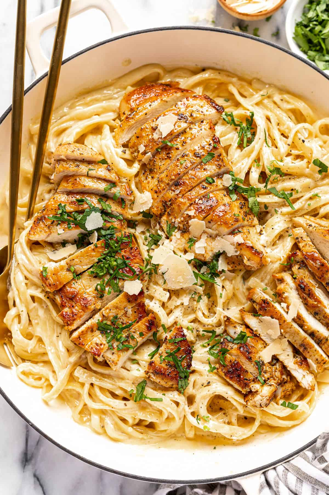

Home
Chicken Alfredo Recipe

Description
Chicken Alfredo is a classic Italian-American pasta dish made with fettuccine noodles, tender pieces of chicken, and rich, creamy Alfredo sauce.
The sauce is typically made form butter, heavy cream, and Parmesan cheese, creating a smooth and indulgent texture. Often seasoned with garlic, salt, pepper, and sometimes parsley, the dish is known for its conforting and savory flavor.
It is commonly served with a side of garlic bread or a fresh salad.
Ingredients
- Chicken Breasts
- Cooking Oil
- Butter
- Garlic
- Heavy Cream
- Parmesan Cheese
- Italian Seasoning
- Salt
- Black Pepper
- Fettuccine
- Fresh Parsley
Steps
- Cook chicken in hot skillet until juicy with a deliciously golden brown crust. You'll need 2 oneless, skinless chicken breasts for this recipe-around 1.3lbs for both.
- Melt the butter in the same skillet used for the chicken breasts. This will add a rich flavor to the dish.
- Add freshly minced garlic.
- Add heavy cream for the base of the sauce to avoid clumping and give it an additional rich cremay taste.
- Add Parmesan Cheese to the skillet
- Cook your fettuccine
- Finally, add your seasoning